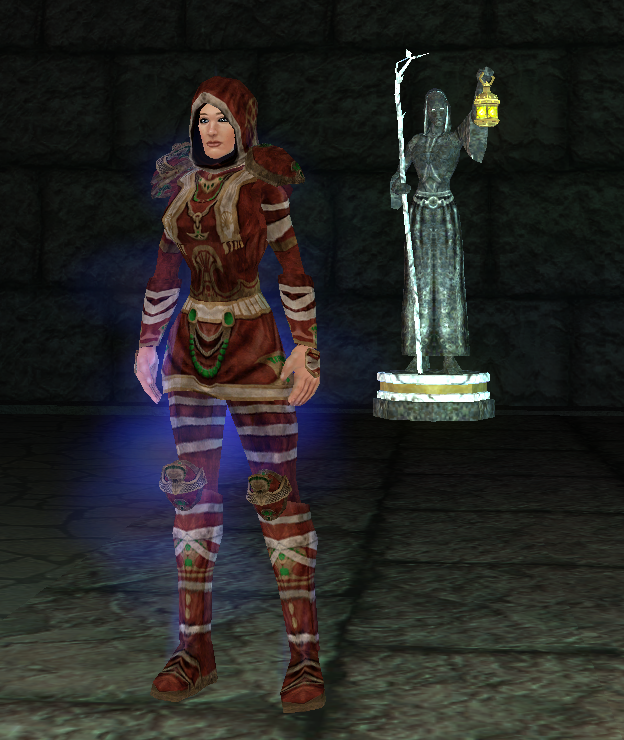
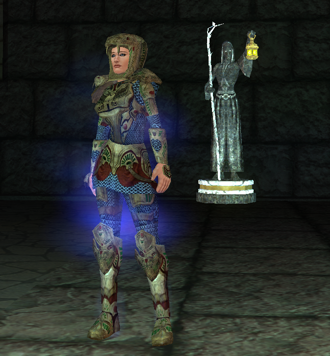
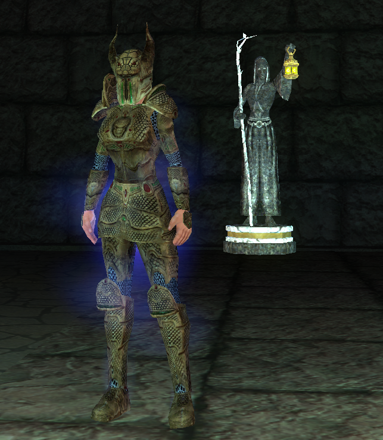
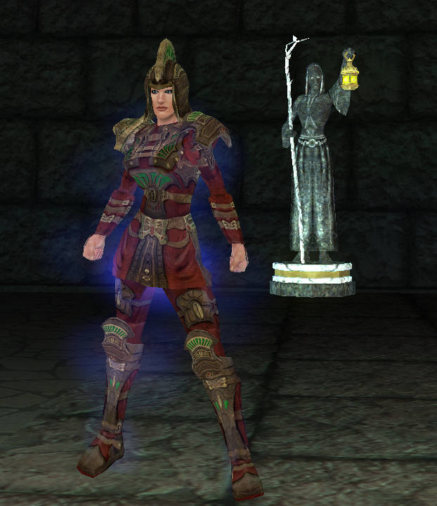

Timekeeper Credits Info and Items
Timekeeper Credits information
Hello Everyone, I've been asked a few time how people can help support the server so I've implemented Timekeeper Credits. Buying Timekeeper Credits helps carry the cost of the server, forums, hosting, etc. If you want to earmark your purchase for my beer fund, please note that specifically :roll: Any support is appreciated but there is no obligation at all! There is no special treatment or preference for buying Timekeeper Credits so please don't ask.
To reward those that want to support the server, I've implemented a simple credit system if you choose to use them. Some helpful items are available on the vendor and I will continue to add items if they make sense. All of the items are things that you can get in-game or items that shouldn't offer any substantial advantage. The vendor is named Edmond and is currently available in the Nexus.
I will give credits to a character of your choice at the rate of 10 Timekeeper Credits per $1. I would prefer purchases to be at a minimum of $5 since I have to process them manually.
How to get Timekeeper Credits
Payments should be submitted via PayPal using the "Send to Friend" option at this address: (contact the server admin for the PayPal address). Important: If you want credits, please make sure that you list your character name in the notes so I know who to apply them to!
Note: Processing these is manual. I will get notified immediately but it may take me a while to apply the credits. If you don't see the credits within 24 hours, please let me know on Discord (#Enine).
- If you would like to support the server in other ways, please reach out to me on Discord with details.
Starter Pack
400 Credits: Starter Pack Token - Turn in to Harold in Nexus: Level 70, T1 Equiv Armor, Epic 2.0 Token, T1 Complete Flag, 100K plat, & 1.5Kaa
Currency
50 Credits: 500 AA Token
80 Credits: 1000 AA Token
50 Credits: 100K Platinum (Turn-in to Edmond)
Specialty
150 Credits: Cuddly Bear of Mass Rage (Free Zone-Wide Aggro)
50 Credits: Singular Boots of Incredible Speed
120 Credits: Shared Boots of Incredible Speed
150 Credits: Supporters Call - Summon Group!
50 Credits: Bling Bling: Ring of the Rainmaker Rk. 1
900 Credits: Bling Bling: Ring of the Rainmaker Rk. 50
100 Credits: Unidentified Item x 10
500 Credits: Sword of Experience Rk. 101
2000 Credits: Sword of Experience Rk. 250
1000 Credits: Epic Shroud of Kerafyrm
500 Credits: Gears of Improved Life (Free Zone Repop)
500 Credits: Gandalf's Call of the Heros (Raid Summon)
Items
600 Credits: Sealed Eternity Loop
900 Credits: Earring of immortality - Complete
1000 Credits: A Great Perspective
1100 Credits: Supreme Overlord Earring
100 Credits: Epic Gemstone of Immortality
200 Credits: Perspective of an Immortal
300 Credits: Overlords Anguish Stone
100 Credits: Epic 2.0 Token - Timekeeper Credits Harness of Epic Power
80 Credits: Yo' Momma So Fat' Stone (Aggro Aug)
1200 Credits: Necklace of the Reaper rk. 100
2000 Credits: Necklace of the Reaper rk. 200
Progression
300 Credits: Tier 2 Completion Ticket (Hand to Edmond)
400 Credits: Tier 3 Completion Ticket (Hand to Edmond)
500 Credits: Tier 4 Completion Ticket (Hand to Edmond)
600 Credits: Tier 5 Completion Ticket (Hand to Edmond)
700 Credits: Tier 6 Completion Ticket (Hand to Edmond)
200 Credits: Tome of Power: Veeshan (Epic 3.0 Item)
200 Credits: Tome of Power: Riftseekers (Epic 3.0 Item)
200 Credits: Tome of Power: Najena (Epic 3.0 Item)
200 Credits: Tome of Power: Hole (Epic 3.0 Item)
200 Credits: Tome of Power: MPG (Epic 3.0 Item)
200 Credits: Tome of Power: Kael (Epic 3.0 Item)
200 Credits: Tome of Power: Anguish (Epic 3.0 Item)
200 Credits: Tome of Power: Sleepers (Epic 3.0 Item)
100 Credits: Head of Najena (Epic 3.0 Item)
100 Credits: Serra's Codex (Epic 3.0 Item)
Epic 3.0 Items
1000 Credits: Book of Epic Power - 3.0
Armor Items
View all Fusion's items on clone
2000 Credits: Fusion's Chest Plate of Flame
1500 Credits: Fusion's Boots of the Prime
1500 Credits: Fusion's Bracer of Health
1500 Credits: Fusion's Bracer of Mana
1500 Credits: Fusion's Gloves of Fusion
2000 Credits: Fusion's Helm of Power
1500 Credits: Fusion's Leg Plate of Flame
2500 Credits: Warbelt of the Destroyer
Weapon Items
View all Fusion's items on clone
2500 Credits: Fusion's Slasher of Doom
2500 Credits: Fusion's Blunt of Force
2500 Credits: Fusion's Blunt of the Sorc
2500 Credits: Fusion's Bow of Fury
2500 Credits: Fusion's Dagger of Faith
2500 Credits: Fusion's Fist of Speed
2500 Credits: Fusion's Fist of the Pro
2500 Credits: Fusion's Hammer of Life
2500 Credits: Fusion's Sword of Battle
2500 Credits: Fusion's Sword of Conqueror's
2500 Credits: Shield of Fusion's Fury
2500 Credits: Idol of the Fusion
Augments
View all Fusion's items on clone
2500 Credits: Fusion's Gear of Armor
2500 Credits: Fusion's Gear of Sorc
Ornamentation (Buy it with EssenceScary NPC into POK)



